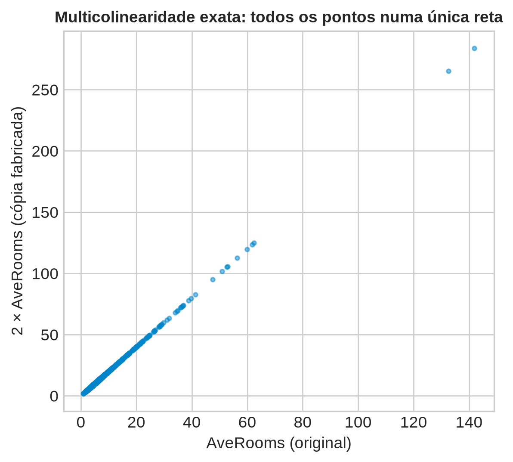
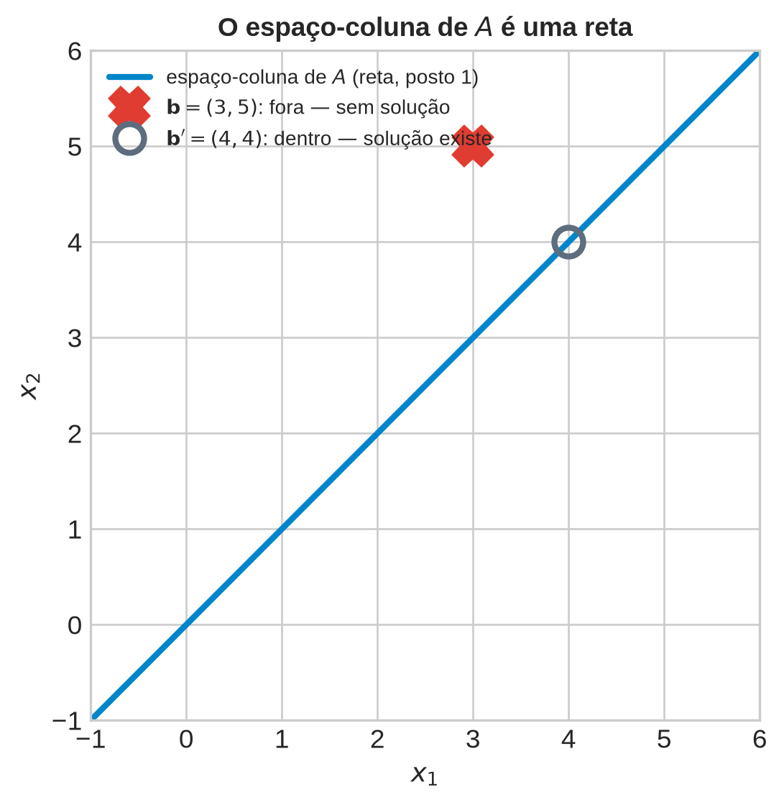
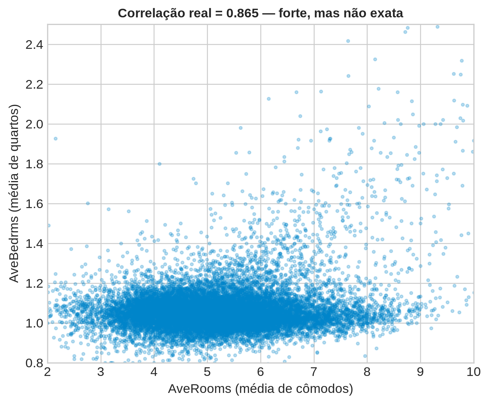

Aula 2: Representações Matriciais, Sistemas Lineares e Independência
Álgebra Linear e Otimização para Aprendizado de Máquina
1 Da Vetor ao Dataset: a Matriz de Design
1.1 Revisão Rápida: O Que a Aula 1 Já Deu
A Aula 1 tratou cada observação como um vetor \(\mathbf{x}\in\mathbb{R}^d\) isolado — um bairro, uma paciente, um documento. Sobre esse vetor único, definimos espaço vetorial e subespaço (fechamento sob soma e sob multiplicação por escalar), comparamos observações por normas (\(L_1\), \(L_2\), \(L_\infty\)) e por produto interno/similaridade de cosseno, e demos um primeiro aviso sobre como a intuição geométrica de “distância” começa a se degradar em espaços de muitos atributos — sintoma que reaparece, formalizado, mais adiante no curso. A aula fechou mostrando que essa mesma máquina (vetores, normas, métricas) é o motor por trás de sistemas como o RAG (Retrieval-Augmented Generation), que faz busca por vizinhança em espaços de embeddings de alta dimensão.
1.2 Organizador Prévio: De Um Vetor Para \(N\) Vetores de Uma Vez
Tudo isso, porém, tratou um vetor de cada vez. Nenhum problema real de aprendizado de máquina para por aí: um dataset não é um vetor, é \(N\) vetores — um por observação —, e qualquer conta que valha a pena fazer (uma previsão, uma distância, um ajuste) precisa ser feita para as \(N\) observações de uma vez, não observação por observação. A pergunta que abre esta aula: que estrutura matemática generaliza “um vetor” para “\(N\) vetores simultaneamente”, preservando as mesmas operações (soma, produto interno) que a Aula 1 já ensinou? A resposta é a matriz — o idioma desta aula.
1.3 Roteiro da Aula
Quatro perguntas guiam esta aula:
- Como generalizar “um vetor” para “um dataset inteiro”, e o que essa generalização compra?
- O que significa, exatamente, multiplicar uma matriz por um vetor — e por que existem duas formas igualmente corretas de entender essa conta?
- Dado um sistema de equações lineares, quando ele tem solução, e quantas?
- Como saber se um conjunto de atributos tem informação redundante?
1.4 Problema Motivador
Antes de qualquer definição formal: no California Housing Dataset da Aula 1, há \(N=20\,640\) bairros, cada um um vetor de 8 atributos. Se você precisasse calcular a previsão de preço para os \(20\,640\) bairros de uma vez — não um de cada vez, chamando a mesma fórmula \(20\,640\) vezes em loop —, existiria uma única conta que faz tudo simultaneamente? Pense por um instante: o que essa conta precisaria “saber” sobre como os \(20\,640\) vetores estão organizados?

2 Definindo a Matriz de Design
2.1 Da Tabela de Dados à Matriz
Uma matriz, formalmente, é só uma tupla de números organizada numa grade retangular: \[ A = \begin{bmatrix} a_{11} & a_{12} & \cdots & a_{1n} \\ a_{21} & a_{22} & \cdots & a_{2n} \\ \vdots & \vdots & \ddots & \vdots \\ a_{m1} & a_{m2} & \cdots & a_{mn} \end{bmatrix} \in \mathbb{R}^{m\times n} \quad \text{(tradução nossa, MathML, Def. 2.1)}. \] O que faz a matriz valer a pena é a dupla leitura que ela admite. Pegue \(N\) observações de um dataset, cada uma um vetor \(\mathbf{x}_i \in \mathbb{R}^d\) (como na Aula 1), e empilhe-as como linhas: \[ X = \begin{bmatrix} \mathbf{x}_1^T \\ \mathbf{x}_2^T \\ \vdots \\ \mathbf{x}_N^T \end{bmatrix} \in \mathbb{R}^{N \times d}. \] Essa é a matriz de design (design matrix): \(N\) linhas (uma por observação), \(d\) colunas (uma por atributo). Mas a mesma matriz também pode ser lida por coluna — a \(j\)-ésima coluna é o vetor com os valores do atributo \(j\) em todas as \(N\) observações. As duas leituras (linha = observação, coluna = atributo) coexistem na mesma matriz, e qual delas é mais útil depende da pergunta que se está fazendo — isso volta com força no próximo bloco.
Vamos tornar isso concreto com uma amostra real de 6 bairros do California Housing Dataset (o mesmo da Aula 1), usando 4 atributos: renda mediana (MedInc), idade média dos imóveis (HouseAge), média de cômodos (AveRooms) e média de quartos (AveBedrms) por domicílio.
DicaNa matriz de design \(X\), o que significa fisicamente “somar duas colunas” — isso é uma operação que faz sentido para os dados desta aula?
Pense em MedInc (renda mediana do bairro, em dezenas de milhares de dólares) e HouseAge (idade média dos imóveis, em anos). As unidades combinam?
- □ Se
MedIncestivesse medida em dólares (não em dezenas de milhares) eHouseAgeem anos, a soma das duas colunas continuaria matematicamente bem definida, mas o resultado ficaria ainda mais dominado pela escala deMedInc. - □ No limite em que os dois atributos fossem reescalados para a mesma faixa numérica (ex.: ambos entre \(0\) e \(1\)), somar as duas colunas passaria a ter uma interpretação física tão direta quanto somar duas medidas da mesma grandeza.
- □ Num dataset de sensores industriais com uma coluna de temperatura (°C) e outra de pressão (bar), somar as duas colunas sofreria exatamente do mesmo problema de interpretação física ilustrado por
MedInc+HouseAgenesta aula. - □ Como a soma de duas colunas com unidades incompatíveis carece de interpretação física direta, a operação de soma de vetores em \(\mathbb{R}^d\) deixa de estar matematicamente bem definida nesse caso.
3 Operações com Matrizes: Duas Leituras de \(A\mathbf{x}\)
3.1 O Produto Matriz-Vetor, de Duas Formas
O MathML define o produto de duas matrizes \(A\in\mathbb{R}^{m\times n}\), \(B\in\mathbb{R}^{n\times k}\) diretamente pela fórmula elemento a elemento (tradução nossa): \[ c_{ij} = \sum_{l=1}^n a_{il} b_{lj}, \qquad i=1,\dots,m,\; j=1,\dots,k \qquad \text{(MathML, eq. 2.13)}. \] O produto matriz-vetor \(A\mathbf{x}\) é o caso particular \(k=1\). Só que essa mesma fórmula admite duas leituras igualmente válidas — e cada uma ilumina uma parte diferente do resto da aula.
Leitura 1 — linha por linha. Fixando \(i\) e variando \(l\) na soma, a \(i\)-ésima entrada de \(A\mathbf{x}\) é o produto interno da \(i\)-ésima linha de \(A\) com \(\mathbf{x}\): \[(A\mathbf{x})_i = \mathbf{a}_i^T \mathbf{x} = \sum_{l=1}^n a_{il}x_l.\] Essa é a leitura natural para previsão: se \(\mathbf{a}_i\) é o vetor de atributos de uma observação e \(\mathbf{x}=\mathbf{w}\) é um vetor de pesos, \((A\mathbf{x})_i\) é a previsão daquela observação.
Leitura 2 — combinação linear das colunas. Reagrupando a mesma soma por coluna em vez de por linha, \(A\mathbf{x}\) inteiro é uma combinação linear das colunas de \(A\), pesada pelas entradas de \(\mathbf{x}\): \[ A\mathbf{x} = x_1 \mathbf{a}^{(1)} + x_2 \mathbf{a}^{(2)} + \cdots + x_n \mathbf{a}^{(n)}, \] onde \(\mathbf{a}^{(j)}\) é a \(j\)-ésima coluna de \(A\). Essa segunda leitura não está enunciada nesses termos no MathML — é uma releitura direta da mesma Eq. 2.13, exposição nossa. É a leitura que vai importar a partir do Bloco 4 (independência, posto): “que combinações das colunas são possíveis” é exatamente a pergunta que decide se um sistema tem solução.
3.2 Conectando com Regressão Linear Múltipla
A Leitura 1 é exatamente a Regressão Linear Múltipla: dado um vetor de pesos \(\mathbf{w}\in\mathbb{R}^d\), a previsão para a observação \(i\) é \(\hat y_i = \mathbf{x}_i^T\mathbf{w}\). Empilhando as \(N\) observações como linhas de \(X\), todas as \(N\) previsões saem de uma vez com um único produto matriz-vetor: \[\hat{\mathbf{y}} = X\mathbf{w} \in \mathbb{R}^N.\] Cada entrada de \(\mathbf{w}\) pondera o quanto o atributo correspondente (uma coluna de \(X\)) contribui para a previsão — a Leitura 2 reaparece aqui: \(X\mathbf{w}\) é uma combinação linear das colunas de \(X\), com pesos dados por \(\mathbf{w}\).
Isso não é só álgebra abstrata — já dá para usar, agora mesmo, sem esperar a Aula 3. Suponha que alguém já lhe entregasse um vetor de pesos \(\mathbf{w}\) (não importa de onde veio — inventado, ou de uma tentativa anterior). O produto \(X\mathbf{w}\) já produz uma previsão de preço para os 6 bairros da amostra, de uma vez só, sem escrever nenhum laço:

O \(\mathbf{w}\) usado aqui foi inventado — escolhido só para ilustrar a mecânica do produto matriz-vetor, não ajustado a partir dos dados. Por isso os dois primeiros painéis divergem tanto: em alguns bairros a previsão exagera o preço (resíduo positivo, barra vermelha), em outros subestima (resíduo negativo, barra azul). Essa diferença, \(\hat{\mathbf{y}}-\mathbf{y} = X\mathbf{w}-\mathbf{y}\), é o resíduo — e ele já anuncia a pergunta central da Aula 3: existe algum \(\mathbf{w}\) que torna esse resíduo o menor possível, para todas as \(N\) observações ao mesmo tempo, não só para estas 6? Guarde essa pergunta; o Bloco 3 desta aula (sistemas lineares) explica por que a resposta não pode ser “resíduo exatamente zero” para todo mundo.
DicaJulgue V ou F: matrizes, produto matriz-vetor e a Leitura 1/Leitura 2
Julgue V ou F — a questão só conta se acertar os 4 itens:
- □ Se \(\mathbf{x}\) for o vetor com todas as entradas iguais a \(1\), a leitura “por coluna” de \(A\mathbf{x}\) mostra que o resultado é simplesmente a soma de todas as colunas de \(A\).
- □ Se todas as entradas de uma linha \(\mathbf{a}_i\) de \(A\) fossem zero, a leitura “por linha” garante que a \(i\)-ésima previsão, \((A\mathbf{x})_i\), seria zero, independentemente de \(\mathbf{x}\).
- □ Num modelo de regressão em que um dos pesos, \(w_j\), é exatamente zero, a Leitura 2 mostra que a coluna (atributo) \(j\) da matriz de design não contribui em nada para \(\hat{\mathbf{y}}\), mesmo que essa coluna tenha valores muito variados entre as observações.
- □ Como a Leitura 1 é “por linha” e a Leitura 2 é “por coluna”, para calcular \((A\mathbf{x})_i\) (a \(i\)-ésima entrada do resultado) só a Leitura 1 pode ser usada — a Leitura 2 não permite recuperar entradas individuais do resultado.
4 Sistemas Lineares: Quando \(A\mathbf{x}=\mathbf{b}\) Tem Solução?
4.1 Um Sistema Linear, Formalmente
Um sistema de \(m\) equações lineares em \(n\) incógnitas tem a forma geral (tradução nossa, MathML, eq. 2.3): \[ \begin{aligned} a_{11}x_1 + \cdots + a_{1n}x_n &= b_1 \\ &\;\vdots \\ a_{m1}x_1 + \cdots + a_{mn}x_n &= b_m \end{aligned} \qquad\Longleftrightarrow\qquad A\mathbf{x} = \mathbf{b}, \] com \(A\in\mathbb{R}^{m\times n}\), \(\mathbf{x}\in\mathbb{R}^n\), \(\mathbf{b}\in\mathbb{R}^m\). A Aula 1 já resolveu um caso particular deste problema — o caso homogêneo \(A\mathbf{x}=\mathbf{0}\), cujo conjunto-solução provamos ser sempre um subespaço vetorial. O MathML generaliza essa observação: “todo subespaço \(U\subseteq(\mathbb{R}^n,+,\cdot)\) é o espaço-solução de algum sistema linear homogêneo \(A\mathbf{x}=\mathbf{0}\)” (tradução nossa, MathML, §2.4). Esta aula pergunta o que acontece quando \(\mathbf{b}\) deixa de ser \(\mathbf{0}\).
4.2 As Três Formas Possíveis de Solução
Ao contrário do caso homogêneo (que sempre tem ao menos a solução trivial), um sistema \(A\mathbf{x}=\mathbf{b}\) com \(\mathbf{b}\) arbitrário admite três, e só três, situações possíveis: nenhuma solução, exatamente uma, ou infinitas (tradução nossa, MathML, §2.1). Cada equação linear em duas variáveis descreve uma reta no plano; resolver o sistema é encontrar a interseção dessas retas.

Em geral (não só com duas variáveis), “para um sistema real de equações lineares obtemos ou nenhuma, ou exatamente uma, ou infinitas soluções” (tradução nossa, MathML, §2.1) — não existe, por exemplo, um sistema linear com exatamente duas ou três soluções. O próprio MathML já aponta a ponte com este curso: “a Regressão Linear resolve uma versão [deste problema] quando não conseguimos resolver o sistema de equações lineares” (tradução nossa, MathML, §2.1, referência ao Cap. 9 do livro).
4.3 Um Exemplo Resolvido: Eliminação de Gauss
O desenho geométrico mostra que um sistema pode ter nenhuma, uma, ou infinitas soluções — mas não mostra como descobrir, na prática, qual dos três casos você tem na mão, sem desenhar nada. A resposta é um algoritmo mecânico, eliminação de Gauss: zerar sistematicamente as entradas abaixo da diagonal até sobrar um sistema triangular fácil de resolver por substituição reversa. Vamos aplicar isso a um sistema de 3 equações e 3 incógnitas: \[ \begin{aligned} x_1 + x_2 + x_3 &= 6 \\ 2x_1 - x_2 + x_3 &= 3 \\ x_1 + 2x_2 - x_3 &= 2 \end{aligned} \]
NotaPremissas do algoritmo
- Cada linha do sistema pode ser somada a um múltiplo escalar de outra linha sem mudar o conjunto-solução (a mesma reta/plano continua sendo descrito, só reescrito).
- O objetivo é usar essa liberdade para zerar as entradas abaixo de cada pivô (o primeiro coeficiente não nulo de cada linha), até sobrar uma forma triangular.
Passo 1 — eliminar a coluna de \(x_1\) abaixo do primeiro pivô. Escrevendo o sistema como matriz aumentada \([A|\mathbf{b}]\): \[ \left[\begin{array}{ccc|c} 1 & 1 & 1 & 6 \\ 2 & -1 & 1 & 3 \\ 1 & 2 & -1 & 2 \end{array}\right] \] Subtraia \(2\times\) a linha 1 da linha 2, e \(1\times\) a linha 1 da linha 3 (para zerar a primeira coluna nessas duas linhas): \[ \left[\begin{array}{ccc|c} 1 & 1 & 1 & 6 \\ 0 & -3 & -1 & -9 \\ 0 & 1 & -2 & -4 \end{array}\right] \]
Passo 2 — eliminar a coluna de \(x_2\) abaixo do segundo pivô. Some \(\tfrac13\) da linha 2 (agora com pivô \(-3\)) à linha 3: \[ \left[\begin{array}{ccc|c} 1 & 1 & 1 & 6 \\ 0 & -3 & -1 & -9 \\ 0 & 0 & -\tfrac{7}{3} & -7 \end{array}\right] \] O sistema já está em forma triangular: cada linha tem um pivô numa coluna nova, e não sobrou nenhuma linha “\(0=0\)” nem “\(0=\) número diferente de zero” — sinal de que existe exatamente uma solução (mais sobre isso a seguir).
Passo 3 — substituição reversa. Da terceira linha, \(-\tfrac73 x_3 = -7 \Rightarrow x_3 = 3\). Substituindo na segunda linha, \(-3x_2 - 3 = -9 \Rightarrow x_2 = 2\). Substituindo na primeira, \(x_1 + 2 + 3 = 6 \Rightarrow x_1 = 1\). A solução é \((x_1,x_2,x_3)=(1,2,3)\) — única, confira abaixo:
A_gauss = np.array([[1.0, 1.0, 1.0], [2.0, -1.0, 1.0], [1.0, 2.0, -1.0]])
b_gauss = np.array([6.0, 3.0, 2.0])
print("Solução via np.linalg.solve:", np.linalg.solve(A_gauss, b_gauss))Solução via np.linalg.solve: [1. 2. 3.]Reconhecendo os outros dois casos no mesmo algoritmo. A forma triangular do Passo 2 não é sempre tão limpa. Se, ao final da eliminação, sobrasse uma linha do tipo “\(0=7\)” (todos os coeficientes zerados à esquerda, um número diferente de zero à direita) — uma contradição —, isso seria o sinal mecânico de nenhuma solução: as equações originais são incompatíveis entre si, exatamente como as retas paralelas do desenho. Se, em vez disso, sobrasse uma linha inteiramente nula (“\(0=0\)”) — uma equação que virou redundante durante a eliminação —, isso seria o sinal de infinitas soluções: sobra uma incógnita livre, um grau de liberdade que qualquer valor preenche. O Bloco 5 dá um atalho para prever qual desses três casos vai acontecer sem precisar fazer a eliminação inteira — comparando o posto de \(A\) com o posto da matriz aumentada.
4.4 O Sistema que Interessa em ML: Sobredeterminado
Em Regressão Linear Múltipla, o “sonho” de ajuste perfeito é resolver \(X\mathbf{w}=\mathbf{y}\): \(A=X\in\mathbb{R}^{N\times d}\) é a matriz de design, \(\mathbf{b}=\mathbf{y}\) os alvos observados, e as incógnitas são os \(d\) pesos \(\mathbf{w}\). Só que \(X\mathbf{w}=\mathbf{y}\) tem \(N\) equações (uma por observação) e \(d\) incógnitas (uma por atributo). Em praticamente todo problema real de ML, \(N \gg d\) — muito mais observações que atributos. Um sistema com mais equações que incógnitas é sobredeterminado, e sobredeterminado genericamente cai no primeiro caso: nenhuma solução exata. Faz sentido: exigir que uma reta (ou hiperplano) passe exatamente por milhares de pontos reais e ruidosos é pedir demais.
Isso não é um beco sem saída — é exatamente o problema que fecha esta aula e abre a próxima: se não existe solução exata, qual é a melhor solução aproximada?
DicaSe um sistema \(A\mathbf{x}=\mathbf{b}\) tem mais incógnitas do que equações (\(n>m\)), ele pode ter solução única?
Dica: pense nas retas/planos do exemplo geométrico acima — cada equação é uma restrição a menos do que graus de liberdade. Sobra alguma direção livre?
- □ Se \(n>m\) e \(A\) tem posto completo (\(\text{rk}(A)=m\)), o sistema, quando solúvel, tem infinitas soluções — nunca uma única.
- □ No caso-limite \(n=m+1\) (uma incógnita a mais que o número de equações), um sistema com \(A\) de posto completo \(m\), quando solúvel, tem exatamente uma “direção livre” de soluções — o conjunto-solução é uma reta, não um único ponto nem um espaço de dimensão maior.
- □ Num sistema de reconstrução de imagem por tomografia, com muito mais pixels a estimar (incógnitas) do que medições feitas (equações) — um caso de \(n\gg m\) —, o mesmo argumento implica que, se existir alguma solução, existem infinitas, a menos que informação adicional (regularização) seja incorporada.
- □ Como um sistema com \(n>m\) tem mais incógnitas que equações, isso garante, por si só, que o sistema tenha pelo menos uma solução — nunca “nenhuma solução”.
5 Independência Linear
5.1 Combinações Lineares e Independência
Definição (Combinação Linear — tradução nossa, MathML, Def. 2.11). Sejam \(\mathbf{x}_1,\dots,\mathbf{x}_k\) vetores. Um vetor \(\mathbf{v}\) da forma \[ \mathbf{v} = \sum_{i=1}^k \lambda_i\mathbf{x}_i, \qquad \lambda_i\in\mathbb{R}, \] é chamado combinação linear de \(\mathbf{x}_1,\dots,\mathbf{x}_k\).
Definição (Independência Linear — tradução nossa, MathML, Def. 2.12). Considere a equação \[ \sum_{i=1}^k \lambda_i\mathbf{x}_i = \mathbf{0}. \] Ela sempre admite a solução trivial \(\lambda_1=\cdots=\lambda_k=0\). Os vetores \(\mathbf{x}_1,\dots,\mathbf{x}_k\) são ditos:
- linearmente dependentes (LD) se existir alguma solução não trivial — algum \(\lambda_i\ne 0\) — para essa equação;
- linearmente independentes (LI) se a única solução for a trivial.
5.2 O Que Essa Definição Quer Dizer, na Prática
Intuitivamente (tradução nossa, MathML, §2.5): “um conjunto de vetores linearmente independentes não tem redundância — remover qualquer um deles faz perder alguma coisa”. Um vetor linearmente dependente dos demais é, em algum sentido preciso, dispensável: pode ser reconstruído a partir dos outros. Um fato que costuma surpreender na primeira vez: 3 vetores quaisquer em \(\mathbb{R}^2\) nunca podem ser linearmente independentes — não importa quais sejam. Vamos verificar com um exemplo concreto.
v1 = np.array([2.0, 1.0])
v2 = np.array([1.0, 3.0])
v3 = np.array([4.0, 9.0])
# Existe combinação não trivial de v1, v2 que dá v3?
coef, *_ = np.linalg.lstsq(np.column_stack([v1, v2]), v3, rcond=None)
a, b = coef
print(f"v3 = {a:.2f}*v1 + {b:.2f}*v2 -> verificação: {a*v1 + b*v2}")
print("rank([v1, v2, v3]) =", np.linalg.matrix_rank(np.column_stack([v1, v2, v3])))v3 = 0.60*v1 + 2.80*v2 -> verificação: [4. 9.]
rank([v1, v2, v3]) = 2De fato, \(\mathbf{v}_3 = 0{,}6\,\mathbf{v}_1 + 2{,}8\,\mathbf{v}_2\) — uma combinação não trivial de \(\mathbf{v}_1,\mathbf{v}_2\) que reconstrói \(\mathbf{v}_3\) exatamente. Logo \(\mathbf{v}_1-\mathbf{v}_2-\mathbf{v}_3\) (rearranjando) dá uma combinação não trivial dos três que soma zero: são linearmente dependentes. Isso não foi coincidência da escolha de \(\mathbf{v}_3\) — em \(\mathbb{R}^2\), qualquer terceiro vetor é automaticamente uma combinação dos outros dois (contanto que os dois primeiros já sejam independentes), porque só há duas direções independentes possíveis no plano. Mais vetores do que dimensões força dependência — sempre.

5.3 Da Independência à Multicolinearidade
Na matriz de design \(X\), cada coluna é um atributo, e a Leitura 2 do Bloco 2 (combinação linear das colunas) diz exatamente o que “coluna redundante” quer dizer: se a coluna \(j\) é uma combinação linear exata das outras colunas, então qualquer contribuição que ela daria a \(X\mathbf{w}\) já pode ser obtida redistribuindo peso entre as colunas das quais ela depende — a coluna não acrescenta nenhuma direção nova ao conjunto de previsões possíveis. É a mesma definição de dependência linear do Bloco 4, só que aplicada às colunas de uma matriz de design específica: multicolinearidade é o nome que a comunidade de ML dá a essa dependência linear entre atributos.
O caso mais fácil de enxergar é uma coluna que é um múltiplo exato de outra — por exemplo, o mesmo atributo medido duas vezes em unidades diferentes (“área em m²” e “área em pés²”, proporcionais entre si). Veja como isso se parece num gráfico de dispersão de uma coluna pela outra, usando o próprio AveRooms do California Housing contra uma cópia fabricada, \(2\times\)AveRooms (a mesma fabricação que o Bloco 5 vai usar para derrubar o posto):

Não há nenhum ponto fora da reta — porque não há nenhuma informação na segunda coluna que a primeira (multiplicada por uma constante) já não tivesse. Conhecendo AveRooms, você sabe exatamente o valor da cópia, sem incerteza nenhuma: são a mesma informação, apenas em duas colunas. O Bloco 5 dá a essa ideia uma medida numérica — o posto.
DicaJulgue V ou F: independência linear
Julgue V ou F — a questão só conta se acertar os 4 itens:
- □ O conjunto vazio de vetores (nenhum vetor) é, por convenção, considerado linearmente independente.
- □ Se \(\mathbf{v}_1,\mathbf{v}_2,\mathbf{v}_3\) são linearmente independentes, então \(\mathbf{v}_1,\mathbf{v}_2\) (removendo \(\mathbf{v}_3\)) também são, necessariamente, linearmente independentes.
- □ Numa matriz de design com 3 atributos, se dois deles (colunas) forem idênticos e o terceiro for diferente de ambos, o conjunto das 3 colunas é linearmente dependente, mas ainda existem 2 colunas entre elas que são linearmente independentes.
- □ Como uma coluna redundante “não acrescenta informação nova” a uma matriz de design, remover essa coluna sempre piora a capacidade do modelo de fazer boas previsões.
6 Base e Posto: Medindo Informação Independente
6.1 O Espaço-Coluna: Onde Vivem as Combinações Possíveis
Antes de qualquer fórmula, pense geometricamente no que a Leitura 2 do Bloco 2 já disse: \(A\mathbf{x}\) é sempre uma combinação linear das colunas de \(A\). Se você deixar \(\mathbf{x}\) variar livremente por todo \(\mathbb{R}^n\), o conjunto de todos os pontos que \(A\mathbf{x}\) consegue alcançar forma uma figura geométrica — o espaço-coluna de \(A\). Com uma coluna só, esse conjunto é uma reta pela origem. Com duas colunas independentes, é um plano. O posto é exatamente a dimensão dessa figura: quantas direções realmente independentes as colunas conseguem gerar, nem uma a mais.
Isso já explica o exemplo do Bloco 3. Lá, \(A=\begin{bmatrix}1&1\\1&1\end{bmatrix}\) tem as duas colunas idênticas, \((1,1)\) e \((1,1)\) — uma única direção. O espaço-coluna de \(A\) não é o plano \(\mathbb{R}^2\) inteiro: é só a reta que passa pela origem na direção \((1,1)\) (a reta \(x_2=x_1\)). Resolver \(A\mathbf{x}=\mathbf{b}\) é perguntar, literalmente, “\(\mathbf{b}\) está nessa reta?” — e o gráfico abaixo responde visualmente antes de qualquer conta:

\(\mathbf{b}=(3,5)\) (marcado com um X) não está sobre a reta — nenhuma combinação das colunas de \(A\) alcança esse ponto, então \(A\mathbf{x}=\mathbf{b}\) não tem solução. Já \(\mathbf{b}'=(4,4)\) (círculo) está exatamente sobre a reta — é \(4\times(1,1)\), então \(\mathbf{x}=(4,0)\) (ou infinitas outras combinações, já que as colunas são dependentes) resolve \(A\mathbf{x}=\mathbf{b}'\). A pergunta “tem solução?” nunca deixou de ser geométrica.
Agora a definição formal, para dar nome preciso ao que o desenho já mostrou. O MathML define (tradução nossa, §2.6.2): “o número de colunas linearmente independentes de uma matriz \(A\in\mathbb{R}^{m\times n}\) é igual ao número de linhas linearmente independentes, e é chamado de posto de \(A\), denotado \(\text{rk}(A)\)” — o mesmo número, calculado por linha ou por coluna (resultado citado, não provado aqui). Uma matriz tem posto completo quando \(\text{rk}(A)=\min(m,n)\) — o maior posto possível para aquele tamanho; caso contrário, é deficiente em posto (tradução nossa, MathML, §2.6.2). Numa matriz de design \(X\in\mathbb{R}^{N\times d}\) com \(N\gg d\), “posto completo” significa \(\text{rk}(X)=d\): todas as \(d\) colunas (atributos) são linearmente independentes entre si. Posto deficiente (\(\text{rk}(X)<d\)) é exatamente a multicolinearidade exata do bloco anterior, agora com um número que a mede.
6.2 A Matriz Aumentada: o Mesmo Critério, Formalizado
O que o gráfico mostrou vale em geral, não só nesse exemplo em \(\mathbb{R}^2\) — e o MathML dá a esse fato um nome formal (tradução nossa, §2.6.2): “para todo \(A\in\mathbb{R}^{m\times n}\) e todo \(\mathbf{b}\in\mathbb{R}^m\), o sistema \(A\mathbf{x}=\mathbf{b}\) pode ser resolvido se, e somente se, \(\text{rk}(A) = \text{rk}(A|\mathbf{b})\)”, onde \([A|\mathbf{b}]\in\mathbb{R}^{m\times(n+1)}\) é a matriz aumentada — a própria \(A\) com \(\mathbf{b}\) anexado como coluna extra.
O mecanismo por trás do critério é exatamente o que o desenho já sugeriu: anexar \(\mathbf{b}\) como coluna extra só aumenta o posto se \(\mathbf{b}\) trouxer uma direção que as colunas de \(A\) ainda não tinham — ou seja, se \(\mathbf{b}\) estiver fora do espaço-coluna de \(A\) (sem solução, \(\text{rk}([A|\mathbf{b}])=\text{rk}(A)+1\)). Se \(\mathbf{b}\) já estiver dentro desse espaço (com solução), anexá-lo não muda nada — \(\text{rk}([A|\mathbf{b}])=\text{rk}(A)\), porque ele não é, ele mesmo, uma direção nova. Comparar os dois postos é, então, só uma forma algébrica e geral de perguntar “\(\mathbf{b}\) está no espaço-coluna, ou não?” — sem precisar desenhar nada, e sem se limitar a \(\mathbb{R}^2\).
Conferindo com números o mesmo exemplo do desenho:
A_paralelas = np.array([[1.0, 1.0], [1.0, 1.0]])
b_paralelas = np.array([3.0, 5.0])
Ab_paralelas = np.column_stack([A_paralelas, b_paralelas])
print("rk(A) =", np.linalg.matrix_rank(A_paralelas))
print("rk([A|b]) =", np.linalg.matrix_rank(Ab_paralelas))rk(A) = 1
rk([A|b]) = 2\(1\ne 2\): sem solução — exatamente o que o desenho já mostrava, agora confirmado sem precisar desenhar nada.
6.3 Calculando o Posto de um Dataset Real
Vamos calcular o posto da matriz de design completa (as \(16{.}640\) observações do California Housing, 4 atributos), e depois fabricar deliberadamente uma multicolinearidade exata para ver o posto cair.
X_completo = _housing[COLS].to_numpy()
print("X completo:", X_completo.shape, " posto:", np.linalg.matrix_rank(X_completo))
# Fabricando multicolinearidade exata: uma "5a coluna" que é 2x AveRooms
X_com_duplicata = np.column_stack([X_completo, 2.0 * X_completo[:, 2]])
print("X com coluna redundante:", X_com_duplicata.shape, " posto:", np.linalg.matrix_rank(X_com_duplicata))X completo: (16640, 4) posto: 4
X com coluna redundante: (16640, 5) posto: 4Com as 4 colunas originais, o posto é \(4\) — posto completo, todas as colunas trazem informação independente. Ao acrescentar uma quinta coluna que é exatamente \(2\times\) AveRooms (a mesma informação numa escala diferente), a matriz passa a ter 5 colunas, mas o posto continua 4 — a nova coluna não é independente das demais, e a matriz fica deficiente em posto (\(4<5=\min(N,5)\)). É exatamente esse tipo de redundância exata que quebra a unicidade de solução de \(X\mathbf{w}=\mathbf{y}\): existem infinitas formas de distribuir o “crédito” entre AveRooms e sua cópia redundante, todas produzindo a mesma previsão.
6.4 O Caso Real: Quase-Multicolinearidade
Multicolinearidade exata como a de cima é rara em dados reais — exigiria uma relação linear perfeita, o que quase nunca acontece por acaso. O problema prático mais comum é mais sutil: quase-dependência, atributos fortemente correlacionados sem serem exatamente proporcionais.
corr_quartos = np.corrcoef(_housing["AveRooms"], _housing["AveBedrms"])[0, 1]
print(f"Correlação AveRooms/AveBedrms: {corr_quartos:.3f}")
fig, ax = plt.subplots(figsize=(6, 5))
ax.scatter(_housing["AveRooms"], _housing["AveBedrms"], s=6, color=COR_A, alpha=0.25)
ax.set_xlim(2, 10); ax.set_ylim(0.8, 2.5)
ax.set_xlabel("AveRooms (média de cômodos)")
ax.set_ylabel("AveBedrms (média de quartos)")
ax.set_title(f"Correlação real = {corr_quartos:.3f} — forte, mas não exata", fontsize=11, fontweight="bold")
plt.tight_layout()
plt.show()Correlação AveRooms/AveBedrms: 0.865
Bairros com mais cômodos por domicílio tendem a ter mais quartos por domicílio também — faz sentido físico —, mas a correlação de \(0{,}865\) não é \(1\): o posto da matriz continua completo (verificado acima, ainda \(4\)), o sistema ainda tem, em princípio, solução única. Mas duas colunas quase-dependentes deixam o sistema numericamente instável — um pequeno ruído nos dados pode balançar bastante a divisão do “crédito” entre AveRooms e AveBedrms, mesmo que o modelo não quebre tecnicamente. Isso não é só uma afirmação teórica — dá para ver o efeito diretamente, com números.
6.5 Vendo a Instabilidade com Números
Pegue uma amostra pequena de 20 bairros (poucos pontos deixam o efeito mais visível — nas \(20{.}640\) observações completas, o excesso de dados “amortece” o ruído). Ajuste, por mínimos quadrados (np.linalg.lstsq, a mesma ferramenta usada no contraexemplo do Bloco 4), um modelo que prevê MedHouseVal a partir só de AveRooms e AveBedrms — as duas colunas quase-dependentes. Depois, perturbe MedHouseVal com um ruído minúsculo, de apenas 1% do seu próprio desvio-padrão, e ajuste de novo, comparando os pesos antes e depois:
_amostra_20 = _housing.sample(n=20, random_state=7)
X_quase_dep = _amostra_20[["AveRooms", "AveBedrms"]].to_numpy()
y_amostra_20 = _amostra_20["MedHouseVal"].to_numpy()
w_original, *_ = np.linalg.lstsq(X_quase_dep, y_amostra_20, rcond=None)
rng_ruido = np.random.default_rng(1)
y_perturbado = y_amostra_20 + rng_ruido.normal(scale=0.01 * y_amostra_20.std(), size=y_amostra_20.shape)
w_perturbado, *_ = np.linalg.lstsq(X_quase_dep, y_perturbado, rcond=None)
print(f"w original (AveRooms, AveBedrms) = {w_original}")
print(f"w com y perturbado em 1% = {w_perturbado}")
print(f"variação relativa em w[AveRooms] = {abs(w_perturbado[0]-w_original[0])/abs(w_original[0]):.1%}")
print(f"variação relativa em w[AveBedrms] = {abs(w_perturbado[1]-w_original[1])/abs(w_original[1]):.1%}")
# Contraste: mesmo experimento com um par de colunas bem condicionado
X_bem_condicionado = _amostra_20[["MedInc", "HouseAge"]].to_numpy()
w_orig_bc, *_ = np.linalg.lstsq(X_bem_condicionado, y_amostra_20, rcond=None)
w_pert_bc, *_ = np.linalg.lstsq(X_bem_condicionado, y_perturbado, rcond=None)
print(f"\nPar bem condicionado (MedInc, HouseAge):")
print(f"variação relativa em w[MedInc] = {abs(w_pert_bc[0]-w_orig_bc[0])/abs(w_orig_bc[0]):.1%}")
print(f"variação relativa em w[HouseAge] = {abs(w_pert_bc[1]-w_orig_bc[1])/abs(w_orig_bc[1]):.1%}")w original (AveRooms, AveBedrms) = [ 0.36023835 -0.03189445]
w com y perturbado em 1% = [ 0.3583604 -0.02248488]
variação relativa em w[AveRooms] = 0.5%
variação relativa em w[AveBedrms] = 29.5%
Par bem condicionado (MedInc, HouseAge):
variação relativa em w[MedInc] = 0.1%
variação relativa em w[HouseAge] = 0.1%Um ruído de 1% em MedHouseVal já é suficiente para o peso de AveBedrms mudar quase 30% — o modelo “hesita” sobre quanto crédito dar a cada uma das duas colunas quase-dependentes, porque ambas contam quase a mesma história sobre o bairro. Compare com o par bem condicionado MedInc/HouseAge: o mesmo ruído de 1% muda os pesos em bem menos de 1%. A diferença não é o tamanho do ruído — é inteiramente a quase-dependência entre as colunas. Essa sensibilidade tem um nome e uma medida exatos — o número de condição —, mas isso é assunto da Aula 4 (autovalores), não desta.
DicaJulgue V ou F: posto, multicolinearidade e solvabilidade
Julgue V ou F — a questão só conta se acertar os 4 itens:
- □ Se, no exemplo desta aula, a coluna redundante fabricada fosse \(-3\times\)
AveRoomsem vez de \(2\times\)AveRooms, o posto da matriz ainda cairia (permaneceria em 4, não subiria para 5). - □ Se todas as \(d\) colunas de uma matriz de design fossem mutuamente ortogonais e não nulas, a matriz teria, necessariamente, posto completo igual a \(d\).
- □ Numa matriz de design com posto deficiente por causa de duas colunas exatamente proporcionais, é possível recuperar o posto completo removendo apenas uma das duas colunas redundantes, sem perder nenhuma informação usada pelo modelo.
- □ Como o posto decide a solvabilidade de \(A\mathbf{x}=\mathbf{b}\) pelo critério \(\text{rk}(A)=\text{rk}(A|\mathbf{b})\), uma matriz \(A\) de posto completo garante, por si só, que o sistema \(A\mathbf{x}=\mathbf{b}\) tem solução, para qualquer \(\mathbf{b}\).
7 Fechamento: Multicolinearidade na Prática e Ponte para a Aula 3
Retomando as perguntas de abertura
- De um vetor para um dataset inteiro — o que isso compra? Empilhar \(N\) vetores como linhas dá a matriz de design \(X\in\mathbb{R}^{N\times d}\) — todas as observações e atributos organizados numa única estrutura, com operações (soma, produto) bem definidas sobre o conjunto inteiro de uma vez.
- Multiplicar matriz por vetor: duas leituras? Por linha (produto interno = previsão por observação) e por coluna (combinação linear das colunas = contribuição por atributo) — a mesma fórmula, dois significados, ambos usados o resto do curso.
- Quando um sistema linear tem solução, e quantas? Nenhuma, exatamente uma, ou infinitas — nunca outro número. Em ML, o caso comum é sobredeterminado (\(N\gg d\)): genericamente, nenhuma solução exata.
- Como saber se atributos têm informação redundante? Independência linear das colunas da matriz de design; o posto mede exatamente quantas dessas colunas são de fato independentes.
Ponte para a Aula 3
Ficou em aberto o problema central: se \(X\mathbf{w}=\mathbf{y}\) geralmente não tem solução exata (sistema sobredeterminado), qual é a melhor aproximação possível? A Aula 3 responde com uma ideia geométrica — projeção ortogonal: em vez de exigir \(X\mathbf{w}=\mathbf{y}\) exatamente, projeta-se \(\mathbf{y}\) sobre o subespaço gerado pelas colunas de \(X\) (o espaço-coluna, de dimensão igual ao posto de \(X\)) — o ponto mais próximo desse subespaço a \(\mathbf{y}\). Isso leva diretamente às Equações Normais, \(X^TX\hat{\mathbf{w}} = X^T\mathbf{y}\), o fechamento algébrico da Regressão Linear Múltipla — e à razão exata pela qual o posto completo de \(X\), tema do Bloco 5, é a condição que garante que essa equação tenha solução única.
8 Exercícios
8.1 Questões discursivas
Explique, com suas próprias palavras, as duas leituras do produto matriz-vetor \(A\mathbf{x}\) (por linha e por coluna), e diga qual das duas é mais útil para entender por que uma coluna redundante na matriz de design não altera as previsões de um modelo linear.
A Aula 1 provou que o conjunto-solução de \(A\mathbf{x}=\mathbf{0}\) é sempre um subespaço vetorial. Explique por que esse resultado não se generaliza para \(A\mathbf{x}=\mathbf{b}\) com \(\mathbf{b}\ne \mathbf{0}\) — ou seja, por que o conjunto-solução de um sistema não homogêneo, quando existe e não é único, não passa pela origem nem é fechado sob soma.
Usando o exemplo desta aula (
AveRoomseAveBedrms, correlação \(0{,}865\)), explique a diferença entre multicolinearidade exata (que reduz o posto) e quase-multicolinearidade (que não reduz o posto, mas ainda é um problema prático). Por que a segunda é mais comum em dados reais do que a primeira?
8.2 Questões de Verdadeiro/Falso
Cada bloco de 4 itens trata do mesmo tema. A questão só é considerada correta se todos os 4 itens forem julgados corretamente (deixar em branco tem penalidade de 20% da nota da questão).
8.3 Aviso
As questões de Verdadeiro/Falso e discursivas ficam sem solução neste arquivo — são para resolução autônoma do aluno, fora do horário de aula.